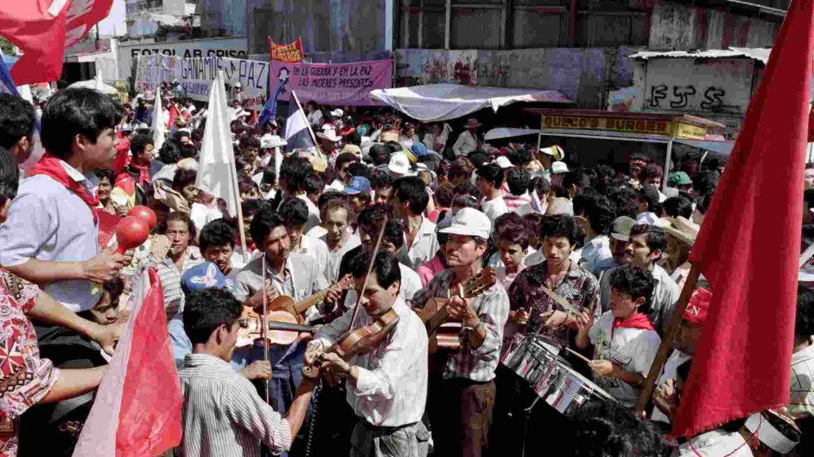

El Costo Humano y la Reconstrucción
La Guerra Civil salvadoreña dejó un legado complejo y doloroso. Más allá de las cifras de muertos y desaparecidos, el conflicto generó profundas heridas sociales y económicas que tomaron años en sanar y, en algunos aspectos, aún persisten. La firma de los Acuerdos de Paz de Chapultepec en 1992 no fue el final de los desafíos, sino el comienzo de un largo proceso de reconstrucción nacional.
Consecuencias Humanas y Sociales
- Pérdidas de vidas: Se estima que alrededor de 75,000 personas murieron y miles más fueron heridas o quedaron con discapacidades permanentes.
- Desplazamiento y Migración: Cientos de miles de salvadoreños fueron desplazados internamente o se vieron obligados a emigrar, principalmente a Estados Unidos y otros países.
- Trauma Social: Las comunidades enteras experimentaron un profundo trauma psicológico y social que afectó generaciones.
- Polarización: A pesar de los acuerdos, la sociedad salvadoreña continuó dividida ideológicamente por un tiempo.
Impacto Económico y Político
- Infraestructura: La guerra destruyó gran parte de la infraestructura del país, afectando carreteras, puentes y servicios básicos.
- Economía: La inversión se detuvo, la producción agrícola e industrial disminuyó drásticamente, y la pobreza se incrementó.
- Reformas Post-Acuerdos: Los Acuerdos de Paz incluyeron importantes reformas políticas y militares, como la desmovilización del FMLN, la depuración de la Fuerza Armada, la creación de la Policía Nacional Civil y la reforma del sistema judicial.

El Camino hacia la Reconciliación
La posguerra ha sido un período de esfuerzos continuos por construir una sociedad más justa y pacífica. Aunque persisten desafíos como la delincuencia, la desigualdad y la memoria histórica, El Salvador ha avanzado significativamente en la consolidación de su democracia y en la búsqueda de la verdad y la justicia para las víctimas del conflicto.
Recordar la guerra no es solo recordar el dolor, sino también reconocer la resiliencia del pueblo salvadoreño y su capacidad para forjar un futuro de paz.